Para dosen berpengalaman yang membimbing peserta melalui program akademik dan praktik di AICAT, memastikan kualitas pembelajaran dan pengalaman di lapangan.
Klik foto untuk membaca biografi singkat setiap anggota tim dosen.
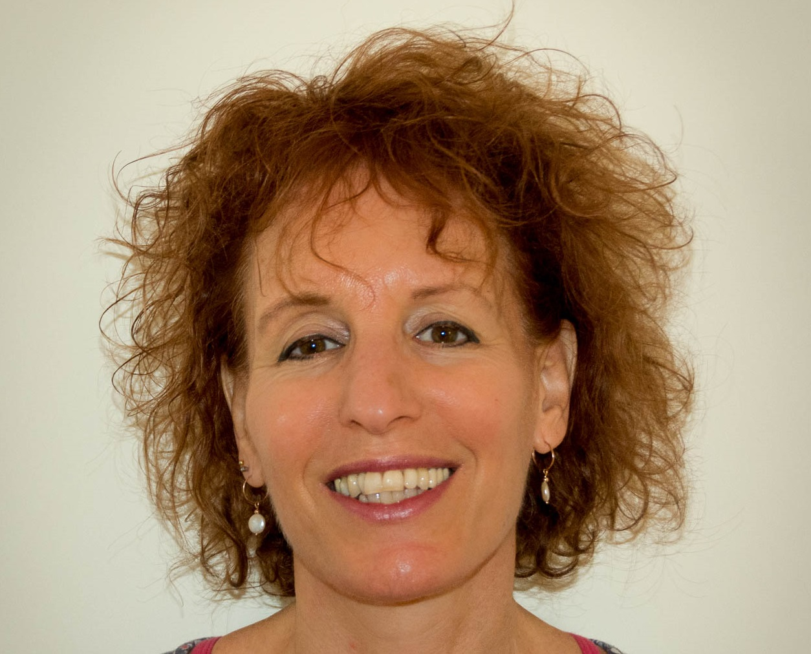
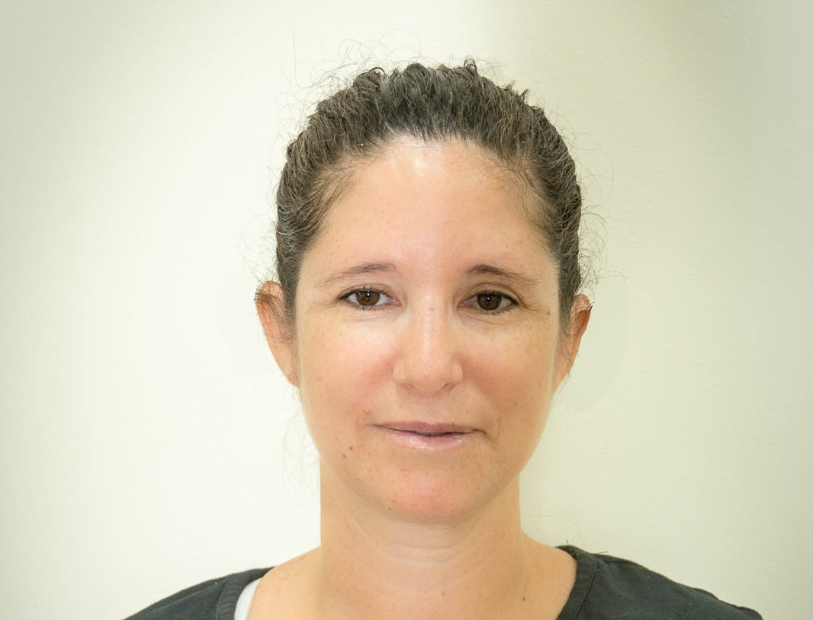
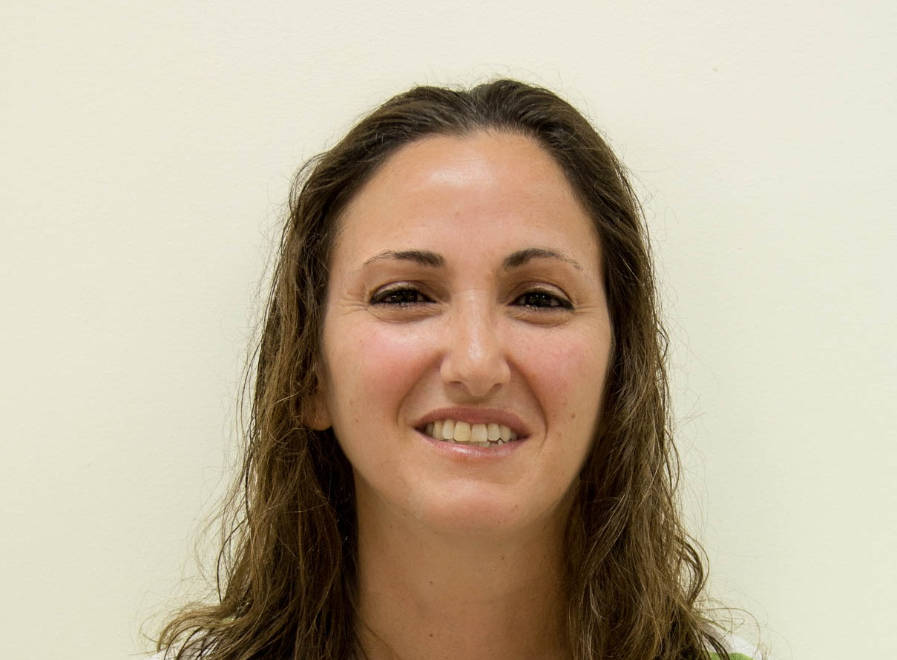
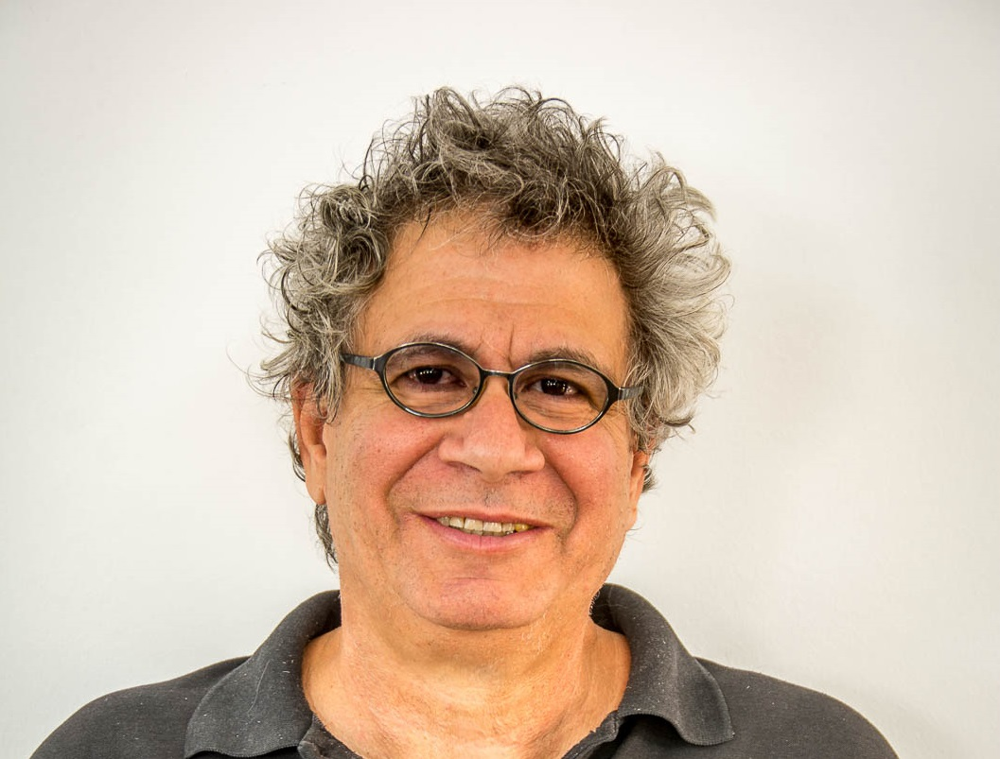
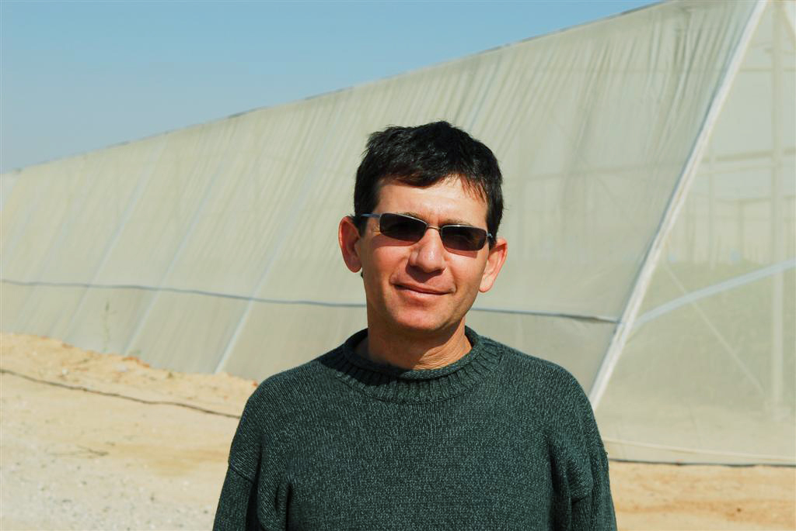
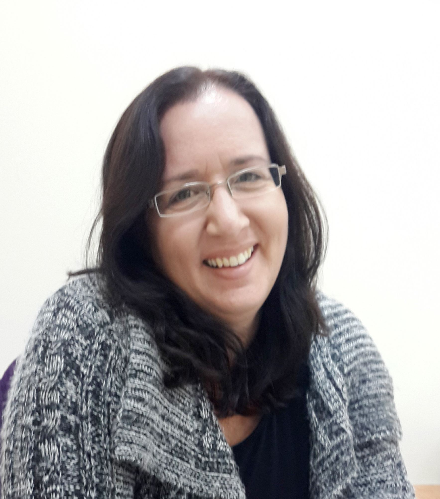
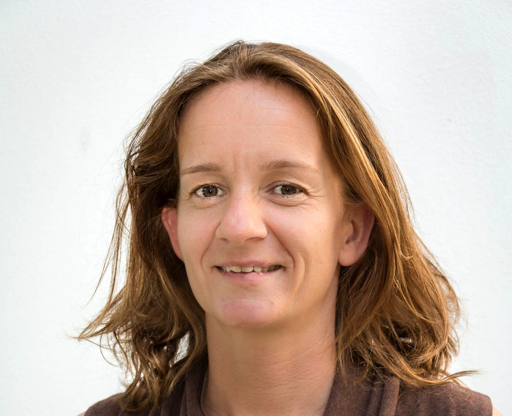
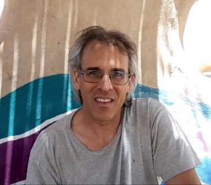
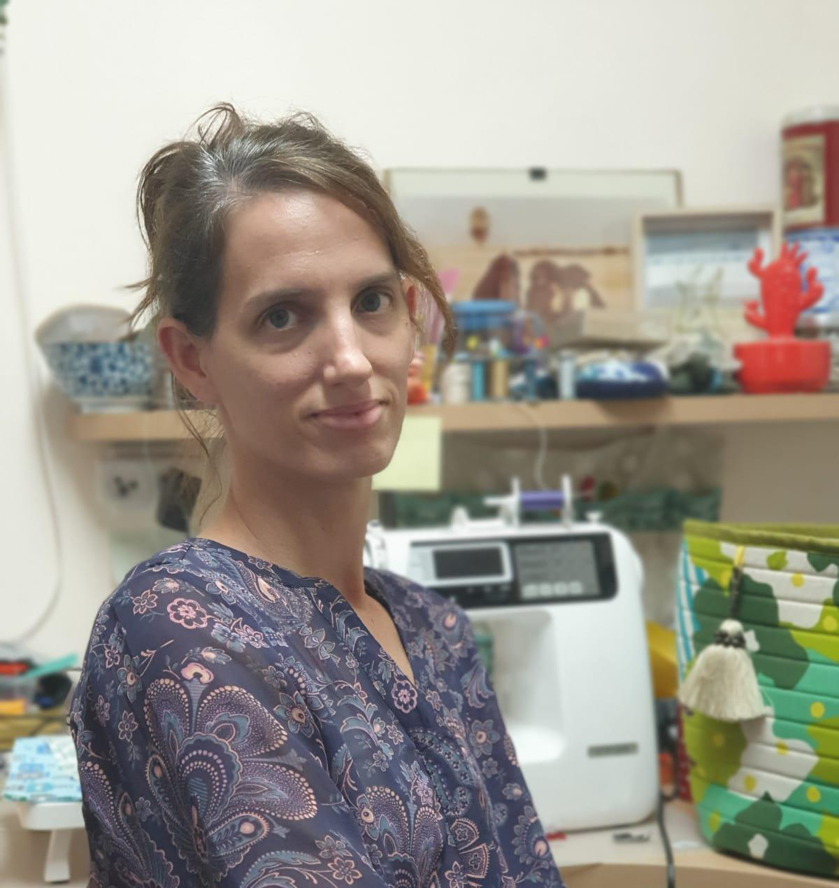
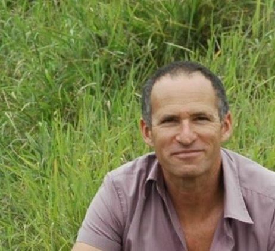
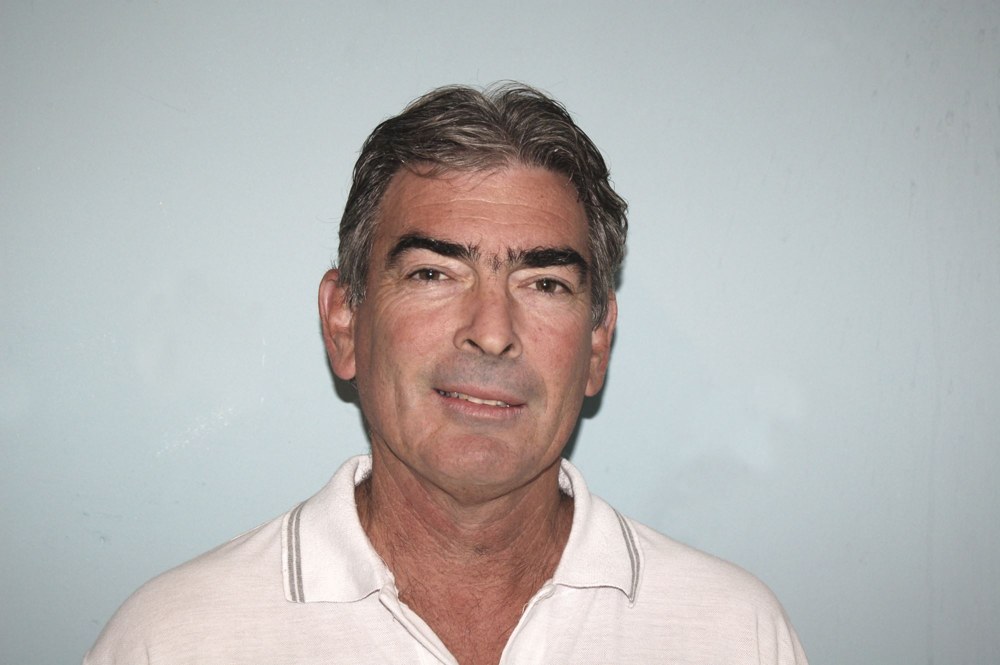
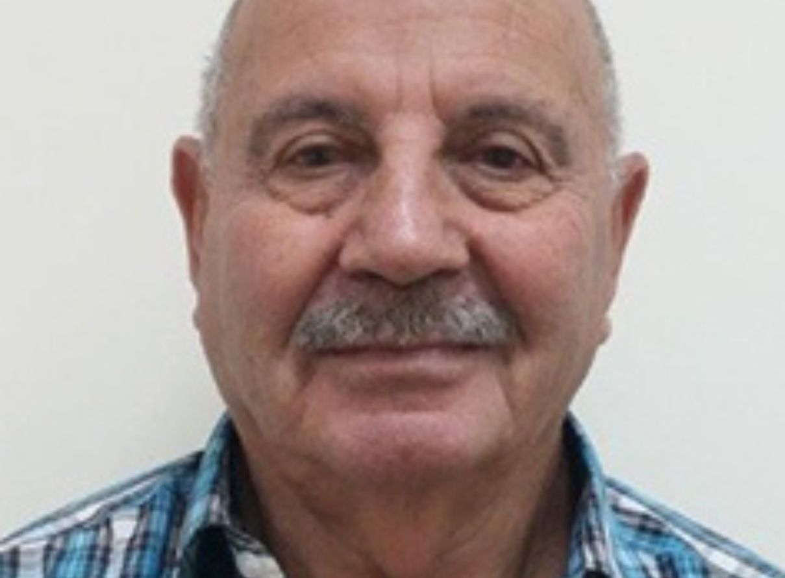

Bergabunglah dengan program pelatihan internasional AICAT dan
pelajari teknologi pertanian
modern langsung dari para ahli.